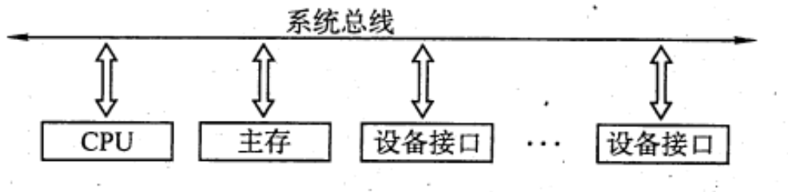
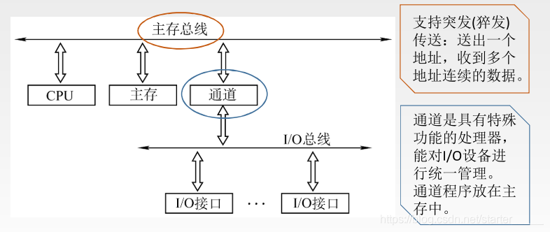
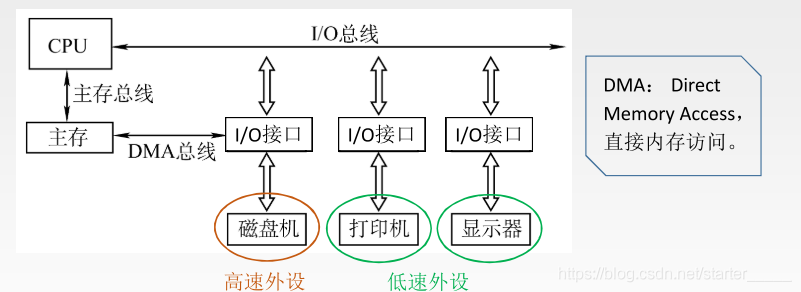

2022.11.23
参考资源：
其他分类方式：同步异步、并行串行
主存通过（ ）来识别信息是地址还是数据。 A. 总线的类型 C. 存储器地址寄存器(MAR) B. 存储器数据寄存器(MDR) D. 控制单元(CU)
【答案】：A
I.存储器和IO设备的地址码 II.所有存储器和IO 设备的时序信号与控制信号 III. 来自IO设备和存储器的响应信号 A. 仅I B. II和III C.仅III D. I,II和III
【答案】：B
【答案】：A
单总线结构：系统总线
双总线结构：系统总线 + 主存总线(主存～CPU) 或 主存总线(主存～CPU) + IO总线(需要通道)(主存～IO)
三总线结构：系统总线 + 主存总线(主存～CPU) + 系统总线(主存～IO) + DMA(IO～主存)
单总线结构
结构：CPU、主存、I/O设备（通过I/O接口）都连接在一组总线上，允许I/O设备之间、I/O设备和CPU之间或I/O设备与主存之间直接交换信息。

双总线结构
结构：双总线结构有两条总线，一条是主存总线，用于CPU、主存和通道之间进行数据传送；另一条是 I/O 总线，用于多个外部设备与通道之间进行数据传送。

三总线结构
结构：三总线结构是在计算机系统各部件之间采用3条各自独立的总线来构成信息通路，这3条总线分别为主存总线、I/O 总线和直接内存访问DMA总线。

【答案】：C
【答案】：C
【答案】：A
总线标准是国际上公布的互连各个模块的标准，是把各种不同的模块组成计算机系统时必须遵守的规范。典型的总线标准有 ISA、 EISA、 VESA、 PCI、 AGP、PCI-Express、USB 等。它们的主要区别是总线宽度、带宽、时钟频率、寻址能力、是否支持突发传送等
2) EISA, Extended Tndustry Standard Arctiteeture， 扩展的ISA。是为配合 32 位 CPU 位CPU而设计的扩展总线，EISA 对 ISA 完全兼容。 3) VESA, Video Electronics Standards Association， 视频电子标准协会。是一个 32位的局部总线，是针对多媒体 PC 要求高速传送活动图像的大量数据而推出的。 4) PCI, Peripheral Component Interconnect， 外部设备互连。是高性能的 32 位或 64 位总线，是专为高度集成的外围部件、扩充插板和处理器/存储器系统设计的互连机制。目前常用的PCI 适配器有显卡、声卡、网卡等。PCI 总线支持即插即用。PCI 总线是一个与处理器时钟频率无关的高速外围总线，属于局部总线。 5) AGP, Accelerated Graphics Port，加速图形接口。是一种视频接口标淮，专用于连接主存和图形存储器，用于传输视频和三维图形数据，属于局部总线。 6) PCI-E, PCI-Express。 是最新的总线接口标准，它将全面取代现行的PCI 和 AGP。 7) RS-232C。是由美国电子工业协会（EIA）推荐的一种串行通信总线，是应用于串行二进制交换的数据终端设备（DTE）和数据通信设备（DCE）之间的标准接口。 8) USB, Universal Serial Bus， 通用串行总线。是一种连接外部设备的IO 总线，属于设备总线。具有即插即用、热插拔等优点，有很强的连接能力。 9) PCMCIA, Personal Computer Memory Card International Association。广泛应用于笔记本电脑的一种接口标准，是一个用于扩展功能的小型插槽。具有即插即用功能。 10) IDE, Integrated Drive Electronics，集成设备电路。更准确地称为 ATA，是一种IDE接口磁盘驱动器接口类型，硬盘和光驱通过 IDE 接口与主板连接。 11) SCSI, Small Computer System Interface，小型计算机系统接口。是一种用于计算机和智能设备之间（硬盘、软驱）系统级接口的独立处理器标准， 12) SATA, Serial Advanced Technology Attachment，串行高级技术附件。是一种基于行业标准的串行硬件驱动器接口，是由Intel、IBM、Dell 等公司共同提出的硬盘接口规范。
| 标准 | 类型 | 串/并 | 备注 |
|---|---|---|---|
| ISA | 系统总线 | 并行 | 最早 |
| EISA | 并行 | 扩展上1个 | |
| VESA | 局部总线 | 视频 | |
| PCI | 局部总线 | 并行 | 设备互联 |
| AGP | 局部总线 | 视频 | |
| PCI-E | 局部总线 | 串行 | 取代上2个 |
| RS-232C | 外部总线 | 串行 | |
| USB | 外部总线 | 串行 | |
| PCMCIA | 笔记本 | ||
| ATA | IDE接口 | ||
| SCSI | 串行 | 外设 | |
| SATA | 串行 | 硬件驱动 |
扩展资源
【答案】：D
【答案】：D
【答案】：C，握手（应答）信号在控制总线上
【答案】：D，USB串行
【答案】：B
【答案】：D，串行
总线传输周期。指一次总线操作所需的时间，包括申请阶段、寻址阶段、传输阶段和结束阶段。总线传输周期通常由若干总线时钟周期构成。
总线时钟周期。即机器的时钟周期。计算机有一个统一的时钟，以控制整个计算机的各个部件，总线也要受此时钟的控制。
总线工作频率。总线上各种操作的频率，为总线周期的倒数。实际上指 1秒内传送几次数据。若总线周期=N个时钟周期，则总线的工作频率=时钟频率/N。
总线时钟频率。即机器的时钟频率，它为时钟周期的倒数。
总线宽度。又称总线位宽，它是总线上同时能够传输的数据位数，通常指数据总线的根数，如32根称为 32位总线。
总线带宽。可理解为总线的最大数据传输率，即单位时间内总线上最多可传输数据的位数，通常用每秒传送信息的字节数来衡量，单位可用字节/秒（B/s）表示。总线带宽总线工作频率x（总线宽度/8）。 注意：总线带宽和总线宽度应加以区别。
总线复用。总线复用是指一种信号线在不同的时问传输不同的信息，因此可以他使用较少的线传输更多的信息，从而节省空间和成本。
信号线数。地址总线、数据总线和控制总线 了 种总线数的总和称为信号线数。其中：总线的最主要性能指标为总线宽度、总线（工作）频率、总线带宽，总线带宽是指总线本身所能达到的最高传输速率，它是衡量总线性能的重要指标。
三者关系．总线带宽 二总线宽度x总线频率。
例如，总线工作频率为 22MHIz，总线宽度为 16位，则总线带宽 =22×(16/8)=44MB/s。
【答案】：10/2*4=20-> B
【答案】：地址10+数据40=50ns
【答案】：66*2*4=528
【答案】：B，复用可以减少根本但不能提高数据传输率
【答案】：首先总线的宽度为64bit，即8字节(Byte)，则采用三通道的存储器总线的总带宽为
8×1333×3=31.992≈32GB/s
【答案】：每秒传送次数x2Bx2 = 2x2.4Gx2Bx2=19.2GB/s